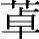

高血压病是危害人类健康的常见病。流行病学调查显示，我国2002年的患病率已达到18.8%，估计全国约有1.6亿高血压病患者，并且有逐年上升的趋势，由高血压病引起的心脑血管疾病在一些城市和地区已成为居民死亡的最主要原因。高血压病中90%以上为原发性，具体发病机制尚未完全明了，这意味着高血压病目前仍是一种只能控制症状而无法彻底治愈的疾病，患者往往需要终身服药。
抗高血压药物种类繁多，药物的作用范围涉及中枢神经、自主神经节、神经末梢、神经递质受体、血管平滑肌等多个部位，这些部位均与性功能的调控有密切关系。加之高血压患者多为老年人，常常合并其他疾病需要同时服用多种药物，因此对判断高血压患者的性功能下降和所服降压药的关系造成困难，临床上要注意具体分析。
临床上常用的药物为可乐定和甲基多巴，通过作用于中枢抑制外周交感神经的活性，从而达到降压效果。可乐定可以激动延髓α2 肾上腺素受体，强烈抑制血中儿茶酚胺和胰岛素的作用，在降压的同时可导致血糖升高和糖耐量降低，进而影响性功能。服用可乐定的男性患者中，约10%～20%发生勃起功能下降或性欲减低。甲基多巴与可乐定具有相似的中枢降压机制，其对性功能的抑制作用与药量成正比，随着用药量的增加，性欲减低和勃起功能下降的发生率也逐步增加。当每日剂量≥2.0g时，会有一半的患者出现显著的性功能下降，表现为男性性欲降低、射精延迟，女性性高潮丧失和性兴奋降低。同时，甲基多巴能增加体内催乳激素水平，故有可能导致男子出现女性型乳房或溢乳。
常见药物有美加明、安血定等，通过阻滞交感神经节，扩张外周血管达到降压目的。由于腹胀、尿潴留等药物副作用发生率较高，现已不常应用。该类药物明显抑制了交感神经系统，故性欲降低、射精困难等性问题的发生率很高。
主要有利血平和胍乙啶类药物，作用机制是耗竭中枢和周围神经末梢中的儿茶酚胺和5-HT，或抑制其吸收与释放。利血平对性功能的影响有以下三个方面：其一，通过耗竭大脑中的兴奋性神经递质儿茶酚胺，从而具有较强的镇静作用，甚至可使高血压患者产生抑郁表现，因此会降低性欲，即使剂量相当小，对性欲的影响也很明显。其二，中枢神经受到抑制后，阴茎海绵体内的肾上腺素能β2受体功能受抑，从而引起勃起功能障碍。长期使用利血平的高血压患者中，有30%～40%出现阴茎勃起能力下降或不能勃起。其三，利血平具有潜在的内分泌样作用，可升高体内泌乳素水平，长期使用会引起男子女性型乳房和溢乳。胍乙啶能阻滞交感神经末梢释放去甲肾上腺素，引起男性射精抑制。胍乙啶对性功能的抑制程度与药物剂量有关，每日服用剂量超过25mg的男性患者，一半以上可出现射精延迟或不能射精，约25%同时出现勃起功能障碍。胍乙啶的同类药物苄甲胍、异喹胍、胍生与胍氯酚等对性功能的副作用与胍乙啶类似。
β2 受体阻滞剂是治疗高血压及心律失常最常用的药物之一，通过阻滞交感神经对心脏的激动作用达到降低血压和恢复正常心率的作用。普遍认为β2 受体阻滞剂对性功能影响很小。临床应用较为广泛的β2 受体阻滞剂普萘洛尔（心得安），每日剂量低于160mg时，一般不会引起性功能障碍；每日剂量超过320mg时，少数高血压患者出现阴茎勃起功能障碍。β2 受体阻滞剂引起性功能下降的作用机制目前尚不清楚，可能与干扰肾上腺素能神经活性、减少阴茎血液供应有关。其他β2 受体阻滞剂，如吲哚洛尔、阿替洛尔、拉贝洛尔等药物，偶而也有引起男性性欲减退、阴茎勃起功能障碍的报道。
此类药物通过直接松弛小动脉壁内的平滑肌而扩张血管，达到降压目的。代表药物是肼苯哒嗪（肼屈嗪）。肼苯哒嗪对性功能影响较小，除非服用剂量相当大，一般不会引起性功能损害。每日口服剂量超过200mg时，有少数患者出现性欲减退，有时可伴有勃起障碍。停药后，阴茎可以恢复正常勃起。因此，当高血压患者在治疗过程中服用其他降压药影响性功能时，可以考虑换用肼苯哒嗪。
利尿剂通过降低血容量达到降压目的。利尿剂对性功能的影响与剂量和用药时间密切相关。长期应用噻嗪类利尿剂均可出现不同程度的性功能障碍。
噻嗪类排钾性利尿剂具有引起血糖升高的副作用，而高血糖对性功能有明显影响。部分患者的性功能下降也可能与药物所致的低血钾有关。血钾浓度降低，导致神经肌肉电活动异常，诱发勃起功能障碍。当低血钾得到纠正后，患者的性功能也会随之恢复。
保钾利尿剂中的螺内酯具有对抗雄激素的作用，可抑制与合成雄激素有关的细胞色素P450 酶活性，降低体内雄激素水平，并抑制雄激素在外周的作用。另外，螺内酯具有拟黄体酮样作用，容易引起男性性欲减退和勃起功能障碍，对于女性则可出现月经失调。螺内酯对性功能的影响也与剂量有关，用药量越大，男性性欲降低和勃起功能障碍、女性月经紊乱的发生率就越高。当停止用药后，症状可得到迅速纠正。
精神失常是指由于各种原因导致的精神活动障碍，包括精神分裂症、焦虑症、抑郁症和躁狂症。根据治疗目的，抗精神失常药可以分为：抗精神分裂症药、抗焦虑药、抗抑郁药和抗躁狂药。抗精神失常药对患者的性功能具有不同程度的影响，能导致患者治疗依从性下降，增加精神失常的复发率。因此，避免和纠正抗精神失常药引起的性功能障碍，将有助于提高患者的药物依从性和治疗效果。但对于精神失常患者的性功能障碍评价存在很大难度。首先，许多精神失常患者存在认知障碍，医患沟通困难；其次，在鉴别患者的性功能障碍究竟是原发精神疾病的症状之一，还是药物所致的副作用常有一定困难。例如，抑郁症患者由于情绪低落常伴有性欲低下、勃起功能障碍、性兴奋降低等表现，随着精神疾病的好转，患者性功能障碍也会有所改善；而抗抑郁药有时也会降低患者的性功能。临床上对此类现象要注意区分并作出相应的处理。抗精神失常药物可通过多种机制影响患者的性功能，但药物所引起的性功能障碍大部分是可逆性的，停药、换药均可取得较好效果。
精神分裂症是一类常见的精神疾病，存在认知、情感、行为等多方面的障碍和精神活动与环境的不协调。精神分裂症的病因未明，被认为与遗传、心理、大脑结构改变和神经生化异常等多种因素有关。目前神经递质假说受到广泛接受，例如多巴胺（dopamine，DA）功能亢进假说、5-HT代谢障碍假说等，常用的抗精神分裂症药物与这些递质或受体的功能密切相关。
典型抗精神病药按照分子结构分为三类。分别为：以氯丙嗪为代表的吩噻嗪类药物，以氟哌啶醇为代表的丁酰苯类药物，以及以泰尔登为代表的硫杂蒽类药物。这些药物主要通过作用于大脑的多巴胺受体，阻断多巴胺的功能而发挥抗精神病作用，能有效地缓解精神分裂症幻觉、妄想、兴奋冲动等症状。
又称冬眠灵、可乐静、氯普马嗪，是目前应用最广泛的一种抗精神失常药，对其药理机制和不良反应的了解也较为深入。氯丙嗪可作用于机体多个系统，产生多种多样的药物作用。对于中枢神经系统，可通过阻断中脑-边缘系统以及中脑-皮质通路中的多巴胺受体而发挥强大的抗精神病作用，用药者产生安定、镇静、感情淡漠等效果；对于植物神经系统，氯丙嗪具有明显的阻断α受体的作用，可扩张血管、降低血压，并且有轻度的阻断M受体的作用，出现口干、排尿困难、便秘及视力模糊等症状；对于内分泌系统，氯丙嗪可以阻断结节-漏斗通路中的多巴胺受体，减少下丘脑和垂体中泌乳素抑制因子、促性腺激素的释放，导致机体泌乳素分泌增加，引起高泌乳素血症。
氯丙嗪对性功能影响明显，在治疗剂量时患者即可出现性功能障碍，而且性功能障碍的表现多种多样。例如，患者最常出现的性功能障碍为性欲低下，与氯丙嗪强大的中枢镇静作用有关。勃起功能障碍的发生与服药剂量有关，当每日剂量达到400mg以上时容易出现，停药后可很快恢复正常。机体血液中泌乳素水平过高，可直接抑制性功能，并且高泌乳素能抑制女性排卵，引起月经不调和溢乳，男性患者则出现乳房女性化以及睾丸缩小等副反应。此外，氯丙嗪具有轻度抗组胺作用，可引起性兴奋时阴道分泌不足，润滑性下降，降低性交时的快感。
亦属于吩噻嗪类抗精神分裂症药物，是最早被报道的可影响性功能的抗精神病药物，服药者性功能障碍的发生率很高，可达一半以上。男性现自杀倾向。抑郁症在普通人群中的发病率约200/10万每年。抑郁症的病因学尚不清楚，但有大量研究资料显示遗传因素、神经生化因素、心理因素对抑郁症的发生有明显的影响。其中，有关中枢内单胺类神经递质（5-HT、去甲肾上腺素、多巴胺等）发生变化和相应受体功能改变的假说最受重视，大部分抗抑郁药是以此学说为依据筛选出来的，而且药理作用和副作用也基本类似。按照化学结构和药理作用特点，抗抑郁症药物可分为四类：①三环类抗抑郁药，包括在此基础上开发出来的四环类和杂环类抗抑郁药；②单胺氧化酶抑制剂，例如异烟肼、苯乙肼、苯环丙胺等；③选择性5-HT再摄取抑制剂（selective serotonin reuptake inhibitor，SSRI），例如米胺色林、曲唑酮、氟西汀等；④作用于其他递质的抗抑郁药，如色氨酸等。前两类属于传统抗抑郁药，后两类为新型抗抑郁药。
与抗精神分裂症相似，对抑郁症患者性功能障碍的评价是一个颇为棘手的问题，常难以鉴别患者的性功能障碍到底是疾病本身的症状还是抗抑郁药所致的副作用。
是最早用于治疗抑郁症的药物，疗效肯定。临床常见的有丙米嗪、去甲米嗪、阿米替林、多虑平等。这些药物结构中都有2个苯环和1个杂环。药理作用上都属于单胺摄取抑制剂，通过阻断去甲肾上腺素和5-HT的再摄取，减少这些递质被再摄取进入神经元末梢降解，从而增加了突触间隙递质的浓度，长期应用也可降低受体的敏感性。除了阻断肾上腺素和5-HT再摄取起到治疗作用外，三环类抗抑郁药还具有M1 、α1 和H1 受体阻断作用，可导致口干、便秘、视物模糊、体位性低血压、镇静、嗜睡、性功能障碍等副作用。性欲低下、射精障碍是服用丙米嗪等三环类抗抑郁药后常见的性功能方面的副作用，与此类药物具有明显的抗胆碱作用有关。除此以外，三环类抗抑郁药还可影响机体的内分泌系统，导致男性乳房发育和睾丸胀痛、女性乳房肿胀和溢乳。三环类抗抑郁药对患者性功能的影响与服用剂量呈正相关，减量或撤药可降低不良反应的发生率。
属非三环类抗抑郁药，如异烟肼和异丙肼。早期曾主要用于治疗结核，后来发现它们具有抗抑郁作用。其药理机制为抑制单胺氧化酶的活性，减少单胺类神经递质的降解，使突触间隙的5-HT、去甲肾上腺素等神经递质的浓度增加，从而产生抗抑郁的作用。由于受饮食和其他药物影响大，高血压和肝功能损害等严重不良反应发生率较高，故目前临床应用并不广泛。服用单胺氧化酶抑制剂的男性中有近30%发生射精延迟或不射精，10%～15%的男性出现勃起功能障碍。停药后，不良反应即可消失。
是一类新型抗抑郁药，通过选择性抑制突触前神经元对5-HT的再摄取，从而增加突触间隙中的5-HT含量。其不良反应较少。SSRI对性功能的影响在于它明显增加了突触间隙中5-HT的浓度，可引起男性勃起功能障碍、射精延迟、不射精以及性高潮障碍等。近年来，利用SSRI延缓射精的副作用来治疗早泄，取得了良好的效果。
抗焦虑药是指用来减轻焦虑、缓解紧张和恐惧、稳定情绪的药物；镇静催眠药是指能引起镇静和近似生理性睡眠的药物。在实际应用中，这两类药物效果具有交叉性，所以常在同一章节内进行介绍。随着非苯二氮 类抗焦虑药和新的镇静催眠药的不断问世，这两类药在精神科领域有进一步区分的趋势。与抗精神失常药和抗焦虑药类似，临床上评价抗焦虑药和镇静催眠药对性功能的影响存在一定的难度，有关这些药物在性功能方面的副作用，目前尚缺乏系统性的研究。
是苯二氮
类药物的典型代表，其主要作用部位在调节情绪反应的边缘系统，通过作用于苯二氮 类受体，抑制大脑边缘系统中海马和杏仁核神经元电活动的发放和传递。安定的抗焦虑作用效果较好，小剂量即可明显改善患者恐惧、紧张、忧虑等症状。随着使用剂量的增加，安定具有镇静和催眠作用，可明显缩短入睡时间，显著延长睡眠持续时间，减少睡眠中觉醒的次数。若剂量进一步加大，则产生抗惊厥、抗癫痫及中枢性肌肉松弛作用。通常安定可通过减轻焦虑症状而改善焦虑患者的性功能，但在大剂量情况下会引起勃起功能障碍，偶有服药者出现溢乳、月经不调、排卵障碍等副反应。
类受体，抑制大脑边缘系统中海马和杏仁核神经元电活动的发放和传递。安定的抗焦虑作用效果较好，小剂量即可明显改善患者恐惧、紧张、忧虑等症状。随着使用剂量的增加，安定具有镇静和催眠作用，可明显缩短入睡时间，显著延长睡眠持续时间，减少睡眠中觉醒的次数。若剂量进一步加大，则产生抗惊厥、抗癫痫及中枢性肌肉松弛作用。通常安定可通过减轻焦虑症状而改善焦虑患者的性功能，但在大剂量情况下会引起勃起功能障碍，偶有服药者出现溢乳、月经不调、排卵障碍等副反应。
是20世纪50年代最常使用的镇静催眠药物，其中枢抑制作用与激活GABA受体、阻断谷氨酸作用于相应的受体有关。小剂量巴比妥类药物可镇静情绪，缓解焦虑、烦躁不安的状态；中等剂量可缩短入睡时间，减少睡眠中觉醒的次数和延长睡眠时间；大剂量对心血管系统有明显的抑制作用；过量可因呼吸中枢麻痹引起死亡。由于这类药易产生耐药性及药物依赖性，现已很少使用。与苯二氮 类药物相似，巴比妥类药可通过镇静、抗焦虑作用解除性抑制状态，从而改善服用者的性功能。但是临床应用中发现此类药物导致服药者性欲减退、勃起功能障碍或性高潮障碍等性功能障碍的现象更常见，原因可能与巴比妥类药物抑制垂体促性腺激素的释放，促进肝脏对血中睾酮和雌二醇的灭活有关。
类药物相似，巴比妥类药可通过镇静、抗焦虑作用解除性抑制状态，从而改善服用者的性功能。但是临床应用中发现此类药物导致服药者性欲减退、勃起功能障碍或性高潮障碍等性功能障碍的现象更常见，原因可能与巴比妥类药物抑制垂体促性腺激素的释放，促进肝脏对血中睾酮和雌二醇的灭活有关。
肾上腺是人体最重要的内分泌器官之一，分为肾上腺皮质和髓质两部分，肾上腺皮质由外向内依次分为球状带、束状带及网状带三层。球状带合成醛固酮等盐皮质激素，束状带合成氢化可的松等糖皮质激素，网状带主要合成性激素。髓质合成肾上腺素和去甲肾上腺素。临床上所谓的皮质激素通常系指糖皮质激素。本节主要讲述糖皮质激素对性功能的影响。
无论是基础分泌还是应激时的分泌，机体的糖皮质激素均受腺垂体产生的促肾上腺皮质激素（adrenocorticotropic hormone，ACTH）调控，ACTH的分泌又受到下丘脑促肾上腺皮质激素释放激素（corticotropin releasing hormone，CRH）的调控，糖皮质激素反过来对下丘脑和垂体分泌CRH、ACTH具有负反馈作用。因此，下丘脑、垂体和肾上腺皮质组成一个密切而又协调的功能活动轴，维持着机体糖皮质激素浓度的相对稳定和在不同状态下的适应性变化。
糖皮质激素对机体的作用广泛而复杂。在生理剂量时主要影响机体对物质的代谢，可促进糖异生，减少机体对葡萄糖的利用，促使血糖升高；促进机体蛋白质分解，导致肌肉消瘦、皮肤变薄；促进体内脂肪重新分布，使机体出现四肢消瘦、躯干发胖的向心性肥胖体形。缺乏糖皮质激素时，将引起代谢失调甚至死亡。当应激状态时，机体分泌大量糖皮质激素，通过允许作用等，使机体适应内外环境的强烈变化。超生理剂量应用时，糖皮质激素除影响物质代谢外，还有情绪改变、抗炎、抗休克和免疫抑制等作用。
由于糖皮质激素在临床上的广泛应用，它的副作用，包括对性功能的影响受到广泛关注。尽管目前缺乏糖皮质激素对性功能影响的针对性研究，但已有其对生殖和性功能的负面影响的报道，包括其引起男性的性欲降低、勃起功能障碍、女性的月经异常，甚至闭经等。这些副作用的出现，一方面是因为滥用皮质激素可诱发糖尿病、增加泌尿生殖系感染机会、引起精神抑郁甚至紊乱；另一方面，大量外源性皮质激素进入体内后可抑制下丘脑和垂体功能，干扰了下丘脑-垂体-性腺轴，直接或间接降低了体内性激素水平，对患者性功能产生负面影响。皮质激素对性功能产生影响的剂量因人而异，有些患者局部应用皮质激素软膏治疗皮肤病也可能发生性功能障碍。需要注意的是，在分析应用皮质激素患者的性方面的有关问题时，必须考虑患者的原发病对性功能的影响，因为慢性病本身以及由慢性病产生的焦虑和抑郁状态都会对性功能产生不良影响。
主要由睾丸间质细胞合成，肾上腺及卵巢也可合成少量雄激素，这些少量雄激素在正常情况下无生理意义。雄激素属于甾体类激素，主要有睾酮、双氢睾酮、脱氢异雄酮和雄烯二酮，其中以双氢睾酮活性最强，其次为睾酮，其余的雄激素活性都很弱。睾酮主要在肝脏内被灭活，少量睾酮在睾丸内被支持细胞转化为雌激素。
睾丸间质细胞分泌睾酮受到下丘脑-垂体的调控，睾酮对下丘脑-垂体又具有负反馈调节，并且在睾丸内部也存在着复杂的局部调节，通过一系列的调节维持着机体全身和睾丸局部的激素水平稳定。
雄激素对体内多个系统都有重要影响。雄激素可促进蛋白质合成，使肌肉发达；促进骨基质合成、钙盐沉积增加，使骨骼生长；刺激骨髓生成红细胞、增强机体的免疫能力和抗感染能力，并促进神经系统的发育和成熟；在雄性生殖系统及第二性征的发生发育中起着决定性作用；在性分化过程中，只有在胚胎睾丸分泌的雄激素刺激下，胚胎生殖器才会向雄性方向发展，若缺乏雄激素，则生殖器官向雌性方向发展；从青春期开始，雄激素对睾丸、精囊腺、阴茎、阴囊等雄性器官的进一步发育产生直接刺激作用，并且个体出现喉结增大、声带变厚、体毛增多等第二性征。若青春期前缺乏雄激素，机体性器官会始终处于幼稚状态，青春期后缺乏性激素，则已发育的睾丸、附睾、前列腺、阴茎、阴囊等性器官会发生萎缩。
雄激素对于促进和维持雄性功能是必不可少的。幼小动物切除睾丸后，由于缺乏睾酮，会始终处于性幼稚阶段，不会出现性行为；成年者切除睾丸，性欲和性能力丧失的发生率较高，但部分患者仍会有性行为，可能与肾上腺分泌的少量雄激素有关。
需要注意的是，对于血浆睾酮低下导致的性欲低下等性功能障碍的男性患者，补充适量的雄激素可以取得良好的效果，使其性欲和性功能恢复正常；血浆睾酮含量正常的男性，雄激素并不能增强其性欲和性功能。正常男性长期大量应用反而会出现副作用，原因在于大量雄激素除干扰下丘脑-垂体-睾丸轴外，在睾丸内被转化为雌激素的量也相应增多，可导致睾丸萎缩和男性乳房女性化，停药后一般可以恢复。有报道称正常人给予睾酮后，可有性欲增强的感觉，但经严格设计的研究并未证实这种现象，因此受试者性欲增强的感觉可能是由于心理作用所致。应用雄激素的另一个危险是引起前列腺增生，或者加重前列腺癌。女性应用大剂量雄激素，可增强性欲，但多毛、痤疮、阴蒂肥大和尿潴留等副作用带来的负面影响，常抵消其治疗效果。如果怀孕早期服用雄激素，则存在女性胎儿男性化的危险。
雄激素的疗效与其使用方式密切相关。天然雄激素口服易被消化道酶降解或吸收入血后被肝脏破坏，故口服无效。一般将其油溶液肌肉注射或植入皮下。人工合成的睾酮衍生物，如甲基睾酮不易被肝脏破坏，口服有效。民间常将雄激素或雄性动物的生殖器官作为健康人的“壮阳药”、“助性剂”，这种做法是没有根据的。
具有对抗雄激素的作用。按照分子结构中是否含有类固醇结构，雄激素拮抗剂分为甾体类抗雄激素和非甾体类抗雄激素药两大类。安宫黄体酮和氟化酰胺分别为两大类雄激素拮抗剂的代表药物，它们通过减少雄激素生成、阻断雄激素前体活化为活性成分、竞争性结合雄激素受体、反馈性抑制性腺轴等方式拮抗雄激素，致使男性性欲减退、勃起功能损害和性高潮障碍。临床上常用来治疗性欲亢进。
天然雌激素主要是雌二醇。它在女性卵巢中合成，经肝脏代谢生成雌酮和雌三醇。应用最广泛的人工合成的雌激素是己烯雌酚，男性肾上腺可产生少量雌激素。此外，睾丸中部分雄激素可在支持细胞的作用下转变为雌激素。
雌激素对于促进雌性生殖器官发育成熟具有重要意义。当女性缺乏雌激素时，将会发生子宫及阴道上皮萎缩、阴道分泌功能下降，导致性交时阴道干涩、性交不适。雌激素对于雌性动物有催情、增强性欲的作用，但对于人类，此项作用似乎并不明显。如果男性患者摄入过多雌激素，由于雌激素可抑制睾酮的生成，可很快出现性欲下降、勃起功能障碍、射精功能损害和精液量减少等症状。
以阿托品为代表，临床常用来解除平滑肌痉挛、抑制腺体分泌、散瞳、提高心率、改善微循环和解救有机磷农药中毒。应用该类药物后，女性常常出现阴道分泌功能下降、阴道润滑性减弱、性兴奋障碍等副作用。
可作用于突触后膜的N胆碱受体，产生阻断神经兴奋传导、肌肉松弛的作用。应用此类药物的男性，由于植物神经受到干扰、阴茎血管反射性舒张受到抑制，可出现勃起功能障碍。
以苯海拉明、异丙嗪等为代表，常用来镇静催眠和防晕止吐。明显的中枢镇静作用可降低用药者的性欲。
西咪替丁等H2 受体拮抗剂有抗雄激素的作用，应用西咪替丁治疗胃溃疡的患者，常出现男性乳腺增生、女性溢乳等不良反应。